Module 8: Uploading Receipts using the Chatter Feed
The Chatter Feed allows authorized users to communicate about an object. Object Actions provide a way to quickly access common tasks related to an object. In this module, you enable the Chatter Feed for the Expense object, and you create an Object Action that lets the user attach a receipt to an expense.
Step 1: Enable Feed Tracking
In Setup, select Customize > Chatter > Feed Tracking
Select the Expense object, and check Enable Feed Tracking
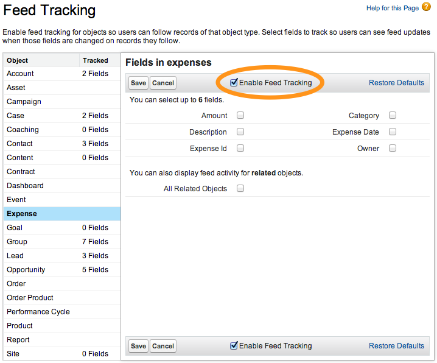
Click Save
Step 2: Modify the Publisher Actions Layout
In Setup, select Build > Create > Objects and click the Expense link
In the Page Layouts section, click the Edit link to the left of Expense Mobile Layout
In the Publisher Actions section, click the override the global publisher layout link.
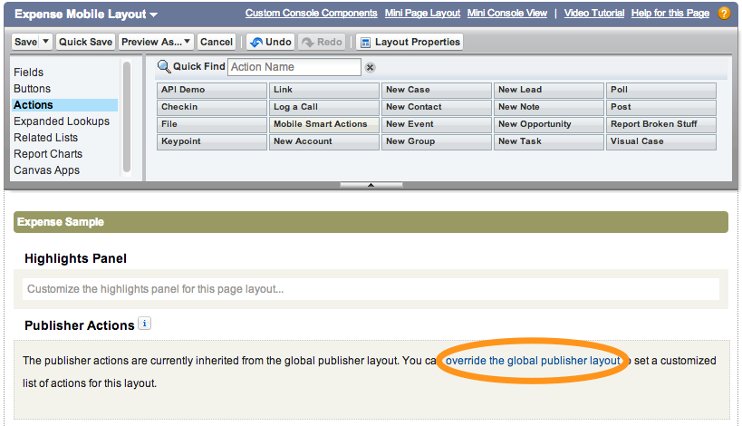
Examine the Publisher Actions and note that the File action is present by default
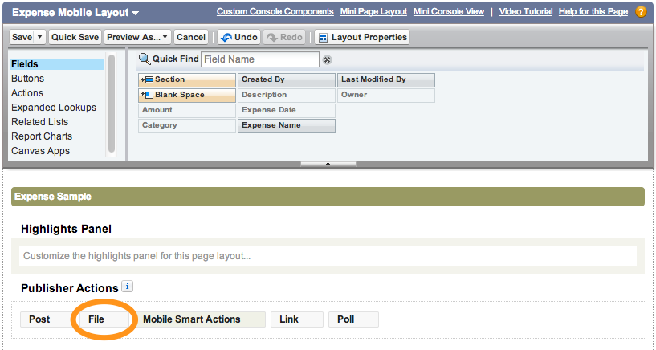
Click Save (upper left)
Step 3: Test the Application
Tap the menu icon
 (upper left corner)
(upper left corner)In the menu, tap Expenses under Recent
Tap an expense in the list
Tap the publisher button (lower right corner)
Tap File
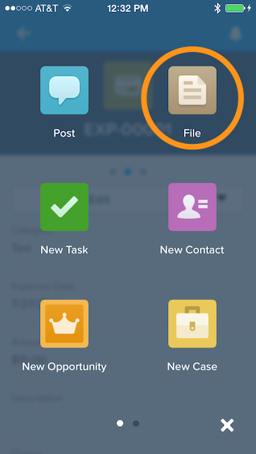
Attach an image
If you are running the application on a device, attach an image using Use Latest Photo, Take Photo or Pick from Camera Roll
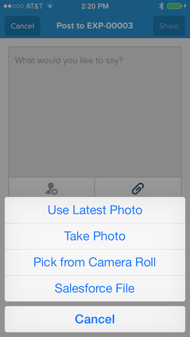
If you are running the application in the Salesforce1 emulator, attach an image using Upload a file from device
Add an optional comment and click Share
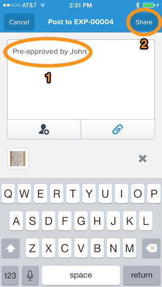
On the Expense Report details screen, swipe right to reveal the Chatter Feed for this expense. You should see the image attachment.
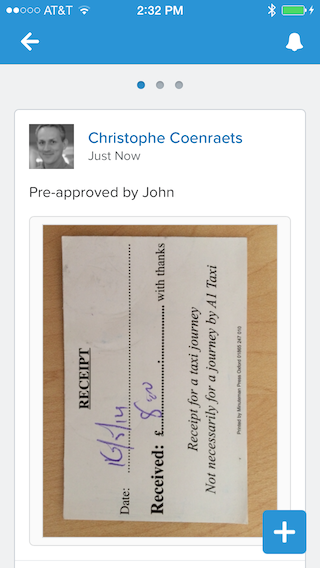
The Chatter Feed automatically allows you and authorized users to communicate about this expense if needed.
Step 4: Add a Related List to the Page Layout
Another way to look at the receipts for an expense is to add the Notes & Attachments list to the Expense Mobile Layout:
In Setup, select Build > Create > Objects and click the Expense link
In the Page Layouts section, click the Edit link to the left of Expense Mobile Layout
Click Related Lists, drag Notes & Attachments to the Related Lists section, and click Save
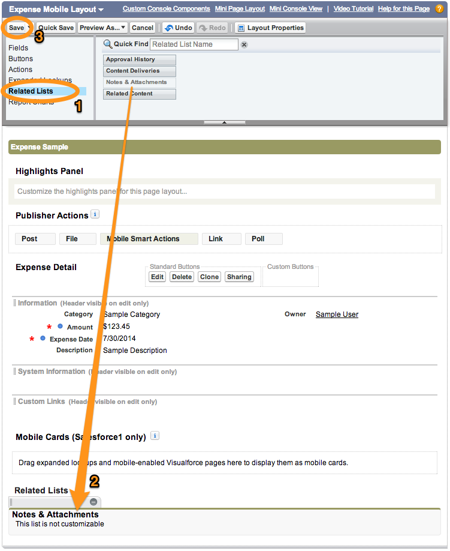
In the Salesforce1 app, go back to the Expense details view and swipe left to reveal the related information view
If the Notes & Attachments option doesn't appear, pull (swipe down and release) the view to refresh it.
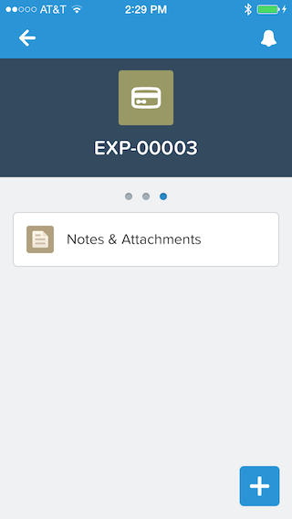
Tap Notes & Attachments to reveal the list of attachments
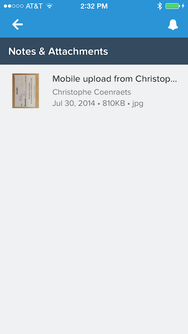
Tap the file you just attached to see it in the image viewer
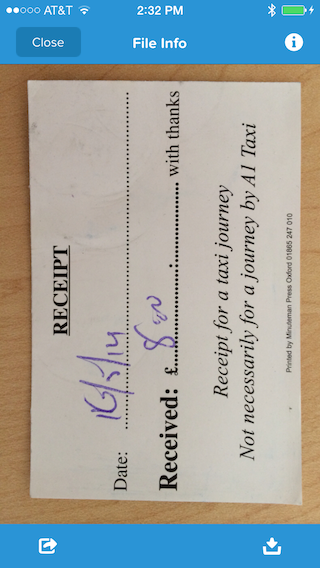
Tap the Close button (upper left)
- Creating a Developer Edition Account
- Installing the Salesforce1 App
- Creating the Expense Object
- Creating the Expenses Tab
- Entering Expenses in the S1 Mobile App
- Creating a Mobile Layout
- Creating a Compact Layout
- Uploading Receipts using the Chatter Feed
- Creating a Global Action
- Working with Related Objects
- Creating a Child Record with an Object Action
- Updating a Record with an Object Action
- Working with Mobile Cards
- Next Steps